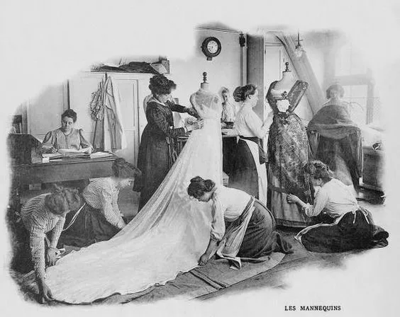
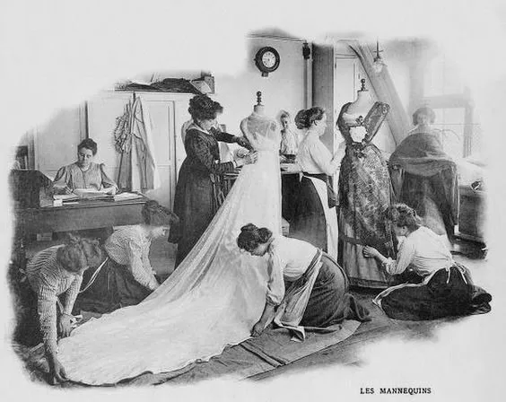

"Victorian fashion reveals not just elegance, but the values, discipline, and aspirations of a changing society."
👗 Why Clothing Was Important
Unlike the expressive clothing of earlier eras, Victorian dress reflected morality, gender roles,
and social order.
The Industrial Revolution made clothes more affordable and accessible, influenced by:
• Sewing machines speeding up production
• Department stores & fashion magazines emerging
• Strict societal expectations—especially modesty for women
Clothing reinforced Victorian values: modesty, restraint, and class hierarchy.
What They Wore ✨
Victorian fashion was intricate, layered, and dictated by social norms.
Women: corsets, crinolines, hoop skirts, bustles, high-necked blouses.
Men: tailcoats, waistcoats, top hats, trousers.
Accessories: gloves, parasols, bonnets, pocket watches, canes.
Dresses evolved—bell-shaped skirts to bustled backs.
Dark, rich colors in winter; lighter fabrics & lace in summer.
Example Clothes
🪡 How Clothing Was Made
The Victorian era brought innovation to fashion manufacturing:
• Sewing machines revolutionized tailoring and home dressmaking.
• Paper patterns (e.g., Butterick) let people sew at home.
• Ready-to-wear emerged via factories.
• Dressmakers, milliners, tailors served high society.
• Corsets used whale-bone or steel for waist shaping.
• Lace, ribbon, beading were hand-applied for the affluent.
👑 Examples of Victorian Fashion
Queen Victoria of England shaped era trends across Europe.
Known for:
• Wearing a white wedding dress, popularizing bridal fashion.
• Promoting modesty and dignity in attire.
• Influencing mourning wear—black lace, veils, jet jewelry.

🧵 Notable Victorian Fashion Designers & Influencers
Charles Frederick Worth
• Founded House of Worth in Paris, dressing royalty and elite.
• Created custom gowns with branded labels.
• Introduced seasonal collections and live runway previews.
 
